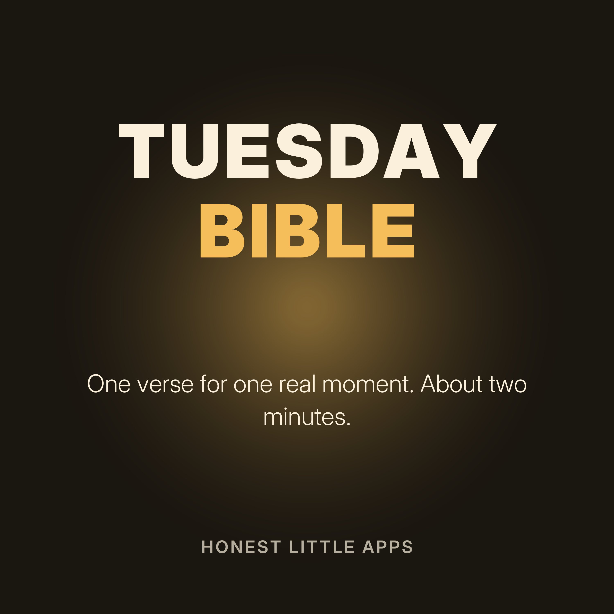

Tuesday Bible: Verses for Real Moments
Most people know what the Bible says. Few know what to do with it on a Tuesday. Each short episode takes one real moment, like the text you shouldn't send or the 3 a.m. worry, reads one verse from the World English Bible (public domain), and offers one small step for today.
Made by Honest Little Apps, the makers of Lampstep: Bible for Real Life, a one-minute daily Bible app built around real moments. Narrated with a synthetic (text-to-speech) voice.
- The text you shouldn't sendYou've typed it. Your thumb is over the send button. And you're angry.
- The 3 a.m. worryIt's the middle of the night, and your mind won't stop running through what could go wrong.
- When a coworker takes the creditYou did the work. Someone else got the credit in the meeting.
- Angry, and still angryAnger isn't always wrong. What we do with it matters.
- The 1 a.m. shopping cartIt's late, and the cart is full of things you didn't need this morning.
- Too tired to keep goingYou're worn out, and there's still more to do.
- Comparing yourself to everyone elseYou scrolled for ten minutes, and now your life feels smaller.